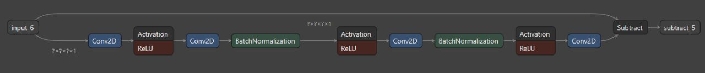
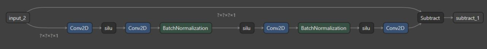
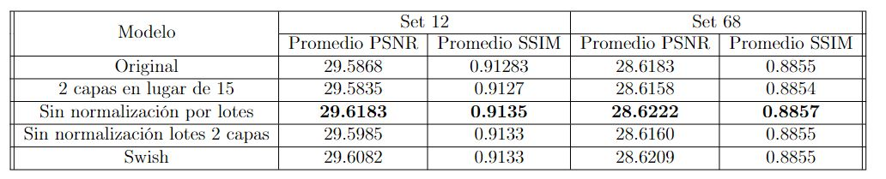

Karlo Guevara
Karlo Guevara
Redes neuronales
convolucionales
"Este trabajo/proyecto se basó en la publicación 'Residual Learning of Deep CNN for Image Denoising'. Leí el artículo, implementé y diseñé una red neuronal basada en él, y la comparé con la red original. Obtuve mejores resultados con mi red.
En el artículo en cuestión, se presenta una red neuronal (a la que llamaremos 'red 1') que utilizaremos en nuestro estudio. Esta red neuronal elimina el ruido de imagenes.

Después de investigar cada capa del modelo presentado en el artículo y leer algunos artículos relacionados, encontré un estudio titulado Searching for Activation Functions , , el cual explica que al cambiar las capas de activación por capas de Swish, el comportamiento del modelo es más estable y con una mejor convergencia. En consecuencia, obtuvimos la siguiente red neuronal:

También se analizaron variantes de la red 1, como por ejemplo la eliminación de las capas de normalización o la reducción del número de capas. Sabíamos de antemano que estas pruebas no producirían buenos resultados, pero se llevaron a cabo principalmente para resaltar la importancia de los elementos que se eliminaron. Los resultados generales se muestran en la siguiente tabla.

El trabajo completo se encuentra disponible en el siguiente informe. PDF